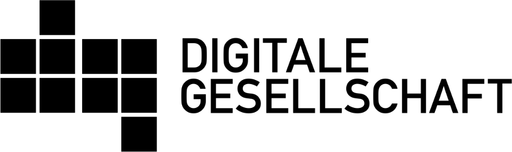
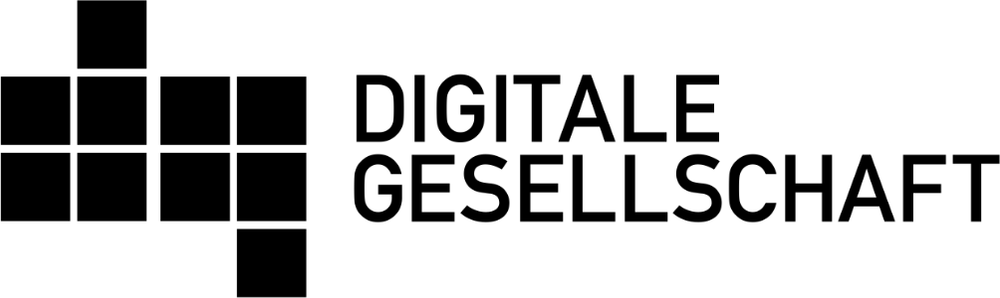

Aus der Krise lernen: Digitale Zivilgesellschaft stärken!
Als zivilgesellschaftliche Organisationen, die sich für eine unabhängige digitale Infrastruktur und freien Zugang zu Wissen einsetzen, fordern wir: „Der Aufbau eines gemeinwohlorientierten digitalen Ökosystems muss endlich politische Priorität bekommen!“
In Krisensituationen zeigt sich die Bedeutung von unabhängigen und belastbaren digitalen Infrastrukturen, die es Menschen, Organisationen und Firmen ermöglichen, ihren alltäglichen Aufgaben nachzukommen. Von den Umstellungen zur Eindämmung von Covid-19 haben bislang vor allem die großen Technologiekonzerne profitiert: Die Verlagerung des Lebens in die digitale Sphäre beschert ihnen größere Marktanteile, Nutzungszahlen und Datensammlungen. Um in Krisenzeiten nicht von ihnen abhängig zu sein, braucht es ein aktives digitales Ökosystem, das echte Wahlmöglichkeiten bietet.
Software und dezentrale Plattformen ohne kommerziellen Hintergrund stammen oft aus gemeinwohlorientiertem Engagement. Nicht nur Unternehmen und Selbständigen bricht gerade die Finanzierung weg, sondern auch ehrenamtlich getragenen Organisationen. Wichtige Teile unserer digitalen Infrastruktur beruhen auf ihrer Arbeit. Für sie gibt es aber kein milliardenschweres Hilfspaket.
Um besser vorbereitet zu sein für zukünftige Krisensituationen, muss ihre Arbeit gestärkt werden. Das Gute ist: Es gibt bereits ein weitreichendes Netz an Menschen und Organisationen, die gemeinsam an dezentraler und damit widerstandsfähiger digitaler Infrastruktur arbeiten und so die Grundlage dafür schaffen, dass wir in der nächsten Krise besser aufgestellt sind. Sie arbeiten an freiem Zugang zum Internet wie die Initiativen für freie Funknetze, der Bereitstellung von sicheren Kommunikationswegen, Angeboten zu Freiem Wissen bis hin zu Open-Data- und Freien-Software-Anwendungen. Bisher erhalten sie dafür noch nicht genug Unterstützung von öffentlicher Seite. Jetzt liegt es an der Politik, auf sie zuzugehen und sie zu unterstützen.
Um langfristig und damit nachhaltig zivilgesellschaftliches Engagement und den Erhalt eines gemeinwohlorientierten digitalen Ökosystems zu fördern, schlagen wir folgende konkrete Maßnahmen vor – denn nach der Krise ist vor der Krise, wenn alles beim Alten bleibt:
Öffnung der Digitalpolitik für gesellschaftlichen Input
Digitalpolitik, die das Gemeinwohl ins Zentrum stellt, lässt sich nur gemeinsam mit gesellschaftlichen Akteurinnen, Akteuren und Initiativen verwirklichen. Hierfür muss sich die Politik noch weiter für Vorschläge aus der Gesellschaft öffnen und diese in die Politikgestaltung miteinbeziehen. Dazu braucht es die Anerkennung zivilgesellschaftlicher Expertise und ein klares Bekenntnis, deren Wissen und Kompetenzen zu nutzen.
Gezielte Förderung
Die digitale Zivilgesellschaft ist nur durch das ehrenamtliche Engagement und die Spenden von Bürgerinnen und Bürgern arbeitsfähig. Gerade in Krisensituationen brechen diese Stützpfeiler schnell weg und bedrohen die Existenz von Vereinen, Stiftungen und Initiativen.
In Deutschland mangelt es an niedrigschwelliger finanzieller Unterstützung für Organisationen und Sozialunternehmen aus der digitalen Zivilgesellschaft. Es braucht neue Fördermechanismen, die den Aufbau nachhaltiger Strukturen unterstützen und nicht nur Innovation im Blick haben, sondern auch die Instandhaltung und Weiterentwicklung bestehender Technologien. Möglich wäre eine solche Förderung beispielsweise durch eine vom Bund geförderte Stiftung öffentlichen Rechts, die Entwicklung, Wartung und Bereitstellung digitaler Technologien für die Gesellschaft fördert.
Öffentliches Geld, Öffentliches Gut
Es braucht rechtliche Grundlagen, die es verpflichtend machen, dass mit öffentlichen Geldern erarbeitete Inhalte offen zugänglich und weiterverwendbar gemacht werden. Der Datenschutz muss dabei immer gewahrt sein.
Dazu gehören: öffentlich finanzierte Software, Datenbestände und Informationen öffentlicher Stellen, Forschungs- und Bildungsinhalte öffentlich getragener Institutionen sowie die Inhalte des öffentlich-rechtlichen Rundfunks.
Entwicklung öffentlicher digitaler Infrastruktur
Wir empfehlen kontinuierliche staatliche Investitionen in die Entwicklung und Instandhaltung digitaler Infrastruktur und den Aufbau widerstandsfähiger Netze.
Wir fordern die Förderung von Dezentralisierung und einem breiten Ökosystem von Betreibern digitaler Infrastruktur, um digitale Souveränität zu erlangen und Abhängigkeiten von einzelnen Anbietern aufzulösen, durch den Abbau von Betreibermonopolen sowie dem konsequenten Einsatz von offenen Standards, Freier- und Open-Source-Software-Technologien.
Eine unabhängige und zuverlässige digitale Infrastruktur ist auch eine Frage der sozialen Gerechtigkeit. Denn der Zugang zu Wissen und digitalen Werkzeugen entscheidet, wer in Zukunft mitgestalten kann und wer abgehängt wird.
Gute Digitalpolitik und digitale Infrastruktur für die Gesellschaft kann nur gemeinsam mit ihr erfolgreich entwickelt und gestaltet werden.
Gemeinnützige Projekte wie Wikipedia und Freifunk helfen gerade jetzt, dass alle Zugang zu Informationen erhalten. Gefördert wird dies bisher kaum. Die Zeit ist gekommen, unsere digitalen Abwehrkräfte zu stärken.
Gerade in dieser Krise sehen wir, wie wichtig es ist, die rechtliche Grundlagen zu schaffen, die es erfordern, dass mit öffentlichen Geldern entwickelte Software unter einer Freie-Software- und Open-Source Lizenz veröffentlicht wird.
In Krisen wird erst recht deutlich, wie wichtig zivilgesellschaftliche Organisationen sind, die Digitalisierung kritisch begleiten, freien Zugang zu Wissen ermöglichen und Ideen für eine digitale Infrastruktur entwickeln.
Eine funktionierende und unabhängige digitale Infrastruktur ist Grundlage für das gesellschaftliche Bestehen im digitalen Zeitalter. Die Corona-Krise zeigt noch einmal deutlich, wie abhängig die gesamte Gesellschaft von der digitalen Infrastruktur ist – und dennoch liegt sie in der Hand von Wenigen. Das müssen wir verändern!
Unterzeichnende Organisationen:
 
